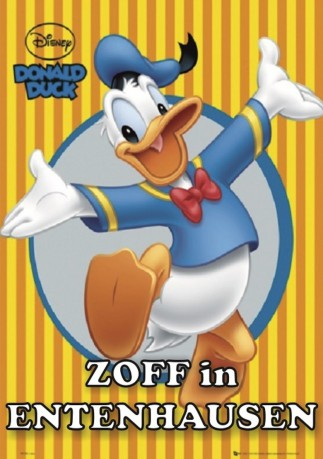

gesehen am 22.04.2016
gesehen am 22.04.2016Alternativ: Down and Out with Donald Duck gesehen am 22.04.2016
 
 IMDB-Wertung: 7.7 / 10
IMDB-Wertung: 7.7 / 10  Metascore:
Metascore: 
“Zoff in Entenhausen” erzählt aus dem Leben des Donald Duck, der in diesem Film ein gefeierter Star in Entenhausen ist, der sogar als Gastgeber einer Fernsehshow arbeiten darf. Nach einem seiner berühmt-berüchtigten Wutanfälle wird er aber entlassen, seine Freunde wenden sich von ihm ab, und das Schlimmste: Er wird durch Mickey Mouse ersetzt! Im Stile einer Dokumentation versucht der Film nun, anhand von Interviews mit Donalds Neffen Tick, Trick und Track, seiner Freundin Daisy Duck und Anderen dahinterzukommen, wie der Superstar so tief sinken konnte.
Jahr: 1987
Dauer: 48 Minuten
FSK:
Land: USA Studio: NBCTonspuren: DD2.0 - ,
Untertitel:
Auflösung: 1080p (1408x1080) Größe: 3614 MB
Genre: Komödie, Animation/Trick, Familie
Regisseur: Scott Garen
Drehbuch: Mark L. Smith
Soundtrack:
Darsteller:
 Will Ryan als Pete / Goofy
Will Ryan als Pete / Goofy Harry Shearer als Additional Voices
Harry Shearer als Additional Voices Tony Anselmo als Donald Duck / Daisy Duck / Huey / Dewey / Louie
Tony Anselmo als Donald Duck / Daisy Duck / Huey / Dewey / Louie Clarence Nash als Donald Duck , archive footage
Clarence Nash als Donald Duck , archive footageDatei: X:\Kinder Disney HD\Classic Cartoon\Zoff in Entenhausen (1987, FSK, 1408x1080).mkv seit 22.04.2016
Festplatte: Kinder-Filme+Trick
 Es gibt insgesamt 22 Filme in der Gruppe 'Kinder Disney HD\Classic Cartoon'
Es gibt insgesamt 22 Filme in der Gruppe 'Kinder Disney HD\Classic Cartoon'